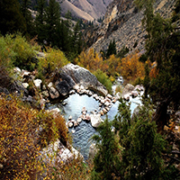

Outdoor Activities
Darby Wind Caves
Darby Canyon, Alta, WY 83414Take this hike during the fall. The trees are beautiful and many different colors. Take a flash light with you so you can explore the cave.
Porter Park
S 2nd W & 3rd W, Rexburg, ID 83440Just one of the parks in Rexburg. This has great space to play group games along with a couple of tennis courts. During the summer time you can ride the park carousel.

Goldbug Hot Springs
Salmon - Challis National Forest, Salmon, ID 83467Its a little of a drive, but these hot springs will be a desination you will remember. Take the hike up to these natural hot tubs and relax with a view.